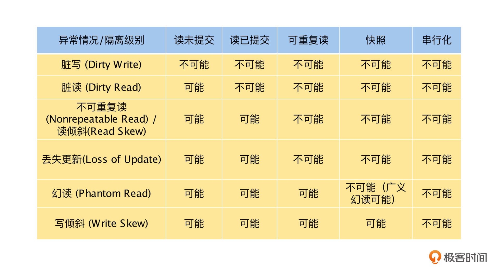

- 00 开篇词 掌握好学习路径，分布式系统原来如此简单.md
- 01 导读：以前因后果为脉络，串起网状知识体系.md
- 02 新的挑战：分布式系统是银弹吗？我看未必！.md
- 03 CAP 理论：分布式场景下我们真的只能三选二吗？.md
- 04 注册发现： AP 系统和 CP 系统哪个更合适？.md
- 05 负载均衡：从状态的角度重新思考负载均衡.md
- 06 配置中心：如何确保配置的强一致性呢？.md
- 07 分布式锁：所有的分布式锁都是错误的？.md
- 08 重试幂等：让程序 Exactly-once 很难吗？.md
- 09 雪崩（一）：熔断，让故障自适应地恢复.md
- 10 雪崩（二）：限流，抛弃超过设计容量的请求.md
- 11 雪崩（三）：降级，无奈的丢车保帅之举.md
- 12 雪崩（四）：扩容，没有用钱解决不了的问题.md
- 13 可观测性（一）：如何监控一个复杂的分布式系统？.md
- 14 可观测性（二）：如何设计一个高效的告警系统？.md
- 15 故障（一）：预案管理竟然能让被动故障自动恢复？.md
- 16 故障（二）：变更管理，解决主动故障的高效思维方式.md
- 17 分片（一）：如何选择最适合的水平分片方式？.md
- 18 分片（二）：垂直分片和混合分片的 trade-off.md
- 19 复制（一）：主从复制从副本的数据可以读吗？.md
- 20 复制（二）：多主复制的多主副本同时修改了怎么办？.md
- 21 复制（三）：最早的数据复制方式竟然是无主复制？.md
- 22 事务（一）：一致性，事务的集大成者.md
- 23 事务（二）：原子性，对应用层提供的完美抽象.md
- 24 事务（三）：隔离性，正确与性能之间权衡的艺术.md
- 25 事务（四）：持久性，吃一碗粉就付一碗粉的钱.md
- 26 一致性与共识（一）：数据一致性都有哪些级别？.md
- 27 一致性与共识（二）：它们是鸡生蛋还是蛋生鸡？.md
- 28 一致性与共识（三）：共识与事务之间道不明的关系.md
- 29 分布式计算技术的发展史：从单进程服务到 Service Mesh.md
- 30 分布式存储技术的发展史：从 ACID 到 NewSQL.md
- 春节加餐 技术债如房贷，是否借贷怎样取舍？.md
- 春节加餐 深入聊一聊计算机系统的时间.md
- 春节加餐 系统性思维，高效学习和工作的利器.md
- 结束语 在分布式技术的大潮流中自由冲浪吧！.md
24 事务（三）：隔离性，正确与性能之间权衡的艺术
你好，我是陈现麟。
通过上节课的学习，我们掌握了通过 2PC 实现分布式事务原子性的技术原理，并且也明白了 2PC 在可用性等方面存在的问题，这些知识能够帮助我们在极客时间的架构选型中，做出正确的选择。
同时，我们还讨论了事务原子性的定义，区分出了事务的原子性并不等价于操作系统里面的原子操作，事务的原子性只定义了操作的不可分割性，而不关心多个事务是否由于并发相互竞争而出现错误，那么在本节课中，我们就一起来讨论事务并发执行的问题，即事务的隔离性。
我们先一起来讨论隔离性的级别和各个隔离级别可能出现的异常情况，然后分析在业务代码中，如何避免异常情况的出现，最后通过讨论隔离性的实现方式，让你进一步理解隔离级别。
什么是隔离性
隔离性定义的是，如果多个事务并发执行时，事务之间不应该出现相互影响的情况，它其实就是数据库的并发控制。可能你对隔离性还有点陌生，其实在编程的过程中，隔离性是我们经常会碰到的一个概念，下面我们就具体讨论一下。
在应用程序的开发中，我们通常会利用锁进行并发控制，确保临界区的资源不会出现多个线程同时进行读写的情况，这其实就对应了事务的最高隔离级别：可串行化，它能保证多个并发事务的执行结果和一个一个串行执行是一样的。
现在你就会发现，隔离级别是我们日常开发中经常碰到的一个概念，那么你肯定会有一个疑问，为什么应用程序中可以提供可串行化的隔离级别，而数据库却不能呢？
其实根本原因就是应用程序对临界区大多是内存操作，而数据库要保证持久性（即ACID 中的 Durability），需要把临界区的数据持久化到磁盘，可是磁盘操作比内存操作要慢好几个数量级，一次随机访问内存、 SSD 磁盘和 SATA 磁盘，对应的操作时间分别为几十纳秒、几十微秒和几十毫秒，这会导致临界区持有的时间变长，对临界区资源的竞争将会变得异常激烈，数据库的性能则会大大降低。
所以，数据库的研究者就对事务定义了隔离级别这个概念，也就是在高性能与正确性之间提供了一个缓冲地带，相当于明确地告诉使用者，我们提供了正确性差一点但是性能好一点的模式，以及正确性好一点但是性能差一点的模式，使用者可以按照自己的业务场景来选择。
隔离级别与异常情况
通过对隔离性定义的讨论，我们知道了隔离性是高性能与正确性之间的一个权衡，那么它都提供了哪些权衡呢？
首先，这个权衡是由隔离级别（Isolation Level）来定义的， SQL-92 标准定义了 4 种事务的隔离级别：读未提交（Read Uncommitted）、读已提交（Read Committed）、可重复读（Repeatable Read）和串行化（Serializable），在后面的发展过程中，又增加了快照隔离级别（Snapshot Isolation）。
由于我们在讨论事务隔离级别的时候，经常通过是否避免某一些异常情况来定义，所以在具体讨论每一个隔离级别之前，我们先来看看事务并发时可能会出现的异常情况，具体有以下几种。
其一，脏写（Dirty Write），即有两个事务 T1 和 T2 ， T1 更改了 x ，在 T1 提交之前， T2 随之也更改了 x ，这就是脏写，这时因为 T1 还没有提交，所以 T2 更改的就是 T1 的中间状态。假如现在 T2 提交了， T1 就要回滚，如果回滚到 T1 开始前的状态，已经提交的 T2 对 x 的操作就丢失了；假如不回滚到 T1 开始前的状态，已经 Roll Back 的 T1 的影响就还存在于数据库中。能够允许这种现象的数据库基本是不可用的，因为它已经不能完成事务的 Roll Back 了。
其二，脏读（Dirty Read），即有两个事务 T1 和 T2 ， T1 更改了 x ，将 x 从 0 修改为 5 ，在 T1 提交之前， T2 对 x 进行了读取操作，读到 T1 的中间状态 x = 5 ，这就是脏读。假设最终 T1 Roll Back 了，而 T2 却根据 T1 的中间状态 x = 5 做了一些操作，那么最终就会出现不一致的结果。
其三，不可重复读（Nonrepeatable read）/ 读倾斜（Read Skew），即有两个事务 T1 和 T2 ， T1 先读了 x = 0 ，然后 T2 更改了 x = 5 ，接着提交成功，这时如果 T1 再次读取 x = 5 ，就是不可重复读。不可重复读会出现在一个事务内，两次读同一个数据而结果不一样的情况。
其四，丢失更新（Loss of Update），即有两个事务 T1 和 T2 ， T1 先读 x = 0 ，然后 T2 读 x = 0 ，接着 T1 将 x 加 3 后提交， T2 将 x 加 4 后提交，这时 x 的值最终为 4 ， T1 的更新丢失了，如果 T1 和 T2 是串行的话，最终结果为 7 。
其五，幻读（Phantom Read），即有两个事务 T1 和 T2 ， T1 根据条件 1 从表中查询满足条件的行，随后 T2 往这个表中插入满足条件 1 的行或者更新不满足条件 1 的行，使其满足条件 1 后提交，这时如果 T1 再次通过条件 1 查询，则会出现在一个事务内，两次按同一条件查询的结果却不一样的情况。
其六，写倾斜（Write Skew），即假如 x ， y 需要满足约束 x + y >= 0 ，初始时 x = -3 ， y = 5 ，事务 T1 先读 x 和 y ，然后事务 T2 读 x 和 y ，接着事务 T2 将 y 更新为 3 后提交，事务 T1 将 x 改为 -5 后提交，最终 x = -5 ， y = 3 不满足约束 x + y >= 0 。
讨论完这些异常情况后，我们再通过一个表格来看看，事务的隔离级别与这些异常情况的关系。

我们从表格中可以看到，在隔离级别的一致性强度上，读未提交 < 读已提交 < 可重复读 <> 快照 < 串行化，可重复度和快照隔离级别之间是不可以比较的。
这里要特别注意，由于 SQL 标准对隔离级别的定义还存在不够精确的地方，并且标准的定义有时还与实现有关系，而各个数据库对隔离级别的具体实现又各不相同，所以上面的表格只是对常见的隔离级别异常情况的定义，你可以把它当成一个通用的标准参考。当你使用某一个数据库时，需要读一下它的文档，确定好它的每一个隔离级别具体的异常情况。
如何避免异常情况
现在我们已经知道了每一个隔离级别可能会出现的异常情况，如果当前数据库使用了某一个隔离级别，我们也知道它有哪些异常情况，是否有办法来避免呢？
其实这是一个非常好的问题，不过有些异常情况只能通过提升隔离级别来避免，那么接下来，我们就针对每一种异常情况来一一讨论一下。
其一，对于脏写，几乎所有的数据库都可以防止异常的出现，并且我们可以理解为出现脏写的数据库是不可用的，所以这里就不讨论脏写的情况了。
其二，对于脏读，提供“读已提交”隔离级别及以上的数据库，都可以防止异常的出现，如果业务中不能接受脏读，那么隔离级别最少在“读已提交”隔离级别或者以上。
其三，对于不可重复读或读倾斜，“可重复读”隔离级别及以上的数据库都可以防止问题的出现，如果业务中不能接受不可重复读和读倾斜，那么隔离级别最少在“可重复读”隔离级别或者以上。
其四，对于丢失更新，如果数据库的隔离级别不能达到“可重复读”隔离级别或者以上，那么我们可以考虑以下的几种方法来避免。
首先，如果数据库提供了原子写操作，那么一定要避免在应用层代码中，进行“读－修改－写”操作，应该直接通过数据库的原子操作执行，避免更新丢失的问题。例如关系数据库中的 udpate table set value ＝ value ＋ 1 where key ＝ ＊ ，MongoDB 中的 \(set、\)unset 等操作。
数据库的原子操作一般通过独占锁来实现，相当于可串行化的隔离级别，所以不会有问题。不过，在使用 ORM 框架时，很容易在应用层代码中完成“读－修改－写”的操作，导致无法使用数据库的原子操作。
其次，如果数据库不支持原子操作，或者在某些场景中，原子操作不能处理时，可以通过对查询结果显式加锁来解决。对于 MySQL 来说，就是 select for update ，通过 for update 告诉数据库，查询出来的数据行过一会是需要更新的，需要加锁防止其他的事务，对同一块数据也进行读取加更新操作，从而导致更新丢失的情况。
最后，我们还可以通过原子比较和设置来实现，例如 update table set value ＝ newvalue where id ＝ ＊ and value ＝ oldvalue 。但是这个方式有一个问题，如果 where 条件的判断是基于某一个旧快照来执行的，那么 where 的判断就是没有意义的，所以要是采用原子比较和设置避免更新丢失的话，一定要确认数据库比较－设置操作的安全运行条件。
我们把第五点和第六点合在一起讨论，对于幻读和写倾斜，如果数据库的隔离级别不能达到可串行化的隔离级别，我们就可以考虑通过显式加锁来避免幻读和写倾斜。通过对事务利用 select for update 显式加锁，可以确保事务以可串行化的隔离级别运行，所以这个方案是可以避免幻读和写倾斜的，但不是在所有的情况下都适用。比如 select for update 中，如果在 select 时不能查询到数据，那么这时的数据库将无法对数据进行加锁。
例如，在订阅会议室时，多个事务先通过 select for update 查询会议室某一时段的订阅记录，当该会议室在这个时间点还没有被订阅时，就都查询不到订阅记录，select for update 也就无法进行显式加锁。如果后面多个事务都会订阅成功，就会导致一个会议室，在某一时段只能订阅一次的约束被破坏。
所以，显式加锁对于写倾斜不能适用的情况就是，如果在 select 阶段没有查询到临界区的数据，就会导致无法加锁。这种情况下，我们可以人为引入用于加锁的数据，然后通过显式加锁来避免写倾斜的问题。比如，在订阅会议室时，我们为所有会议室的所有时间都创建好数据，每一个“时间－会议室”一条数据，这个数据没有其他的意义，只是在 select for update 时，数据库可以 select 查询到数据来进行加锁操作。
如何来实现隔离性
到这里，我们已经讨论完事务的隔离级别，每一个隔离级别可能遇到的异常情况，以及避免这些异常情况的具体技术方案，最后我们一起来讨论一下，事务的隔离性是如何实现的。
既然事务的隔离性是用来确保多个事务并发执行时的正确性的，那么我们就可以依据应用程序开发中经常使用的并发控制策略，来思考事务的隔离性如何实现，这样就可以轻松得出如下的几个方法。
首先，最容易想到的是通过锁来实现事务的隔离性。对于锁的方案，最简单的策略是整个数据库只有一把互斥锁，持有锁的事务可以执行，其他的事务只能等待。但是这个策略有很明显的问题，那就是锁的粒度太粗，会导致整个数据库的并发度变为 1 。
不过，我们可以进行优化，为事务所操作的每一块数据都分配一把锁，通过降低锁的粒度来增加事务的并发度。同时，相对于互斥锁来说，读写锁是一个更好的选择，通过读写锁，多个事务对同一块数据的读写和写写操作会相互阻塞，但却能允许多个读操作并发进行。
这样我们就得到了一个事务的并发模型，但是一个事务通常由多个操作组成，那么一个事务在持有锁修改某一个数据后，不能立即释放锁。如果立即释放锁，在其他的事务读到这个修改或者基于这个修改进行写入操作，当前事务却因为后续操作出现问题而回滚的时候，就会出现脏读或脏写的情况。
对于这个问题有一个解决方法，即事务对于它持有的锁，在当前的数据操作完成后，不能立即释放，需要等事务结束（提交或者回滚）完成后，才能释放锁。这个加锁的方式就是两阶段锁（2PL）：第一阶段（当事务正在执行时）获取锁，第二阶段（在事务结束时）释放所有的锁。
那么现在是否就得到了可串行化的隔离性呢？其实还不是的，我们现在还没有解决幻读和写倾斜的问题，幻读指的是其他的事务改变了当前事务的查询结果，在幻读的情况下，可能会导致写倾斜，比如前面提到的例子，当订阅会议室的事务进行 select 操作时，由于会议室还没有被订阅，所以数据库没有办法对订阅记录加锁，这样多个事务同时操作，就会导致一个会议室，在同一个时间内出现多个订阅记录的异常情况。
关于这个问题，我们可以通过谓词锁（Predicate Lock）来解决。它类似于前面描述的读写/互斥锁，但是它的加锁对象不属于特定的对象（例如表中的一行），它属于所有符合某些搜索条件的对象，如果对符合下面 SELECT 条件的对象加锁。
SELECT * FROM bookings WHERE room_id = 888 AND start_time < ‘2022-02-02 13:00’ AND end_time > ‘2022-02-02 12:00’;
这样就可以避免一个会议室，在同一个时间内被订阅多次的情况了。同时，间隙锁（Next-Key Locking）也可以解决这个问题，它是关于谓词锁的简化以及性能更好的一个实现。
其次，我们可以通过多版本并发控制（MVCC , Multi-Version Concurrency Control）实现隔离性。数据库为每一个写操作创建了一个新的版本，同时给每一个对象保留了多个不同的提交版本，读操作读取历史提交的版本，这样对同一个数据来说，只有写写事务会发生冲突，读读事务和读写事务是不会发生冲突的。对于写写冲突的问题，可以通过加锁的方式来解决，不过对于 MVCC 来说，相对于悲观锁，乐观锁是一个更常见的选择。
另外，通过 MVCC 来实现隔离性，由于读操作都是读取旧版本的数据，所以数据库需要知道哪些读取结果可能已经改变了，然后中止事务，不然就会导致写倾斜的问题出现。这需要数据库能够检测出异常情况，然后中止事务，而实现这个异常检测机制的 MVCC ，我们称为可序列化快照隔离（SSI , Serializable Snapshot Isolation），这是一个比较新的研究方向，目前还处于快速发展中。
最后是一个最简单的方式，通过避免并发的情况出现，在单个线程上按顺序一次只执行一个事务。这个方式避免了并发的出现，但是也失去了并发带来的多机多核的计算能力提升，目前在一些基于内存的数据库上使用过，比如 Redis ，同时它也在研发和发展中。
总结
本节课中，我们先掌握了有哪些隔离级别，以及每一个隔离级别可能出现的异常情况，这样在业务开发的过程中，我们对程序可能出现的异常情况就心中有数了。
其次，我们一起学习了如何避免异常情况的出现，在以后的业务选型过程中，我们不仅知道如何来选择数据库的隔离级别，也知道了当数据库的隔离级别不能调整时，如何通过应用开发手段来避免一些异常情况。
最后，我们讨论了如何实现数据库的隔离级别，这个过程能帮我们更深刻地理解隔离性的知识和原理。
思考题
你能在银行转账的业务场景下，举一个出现写倾斜的例子吗？
欢迎你在留言区发表你的看法。如果这节课对你有帮助，也推荐你分享给更多的同事、朋友。
© 2019 - 2023 Liangliang Lee. Powered by gin and hexo-theme-book.